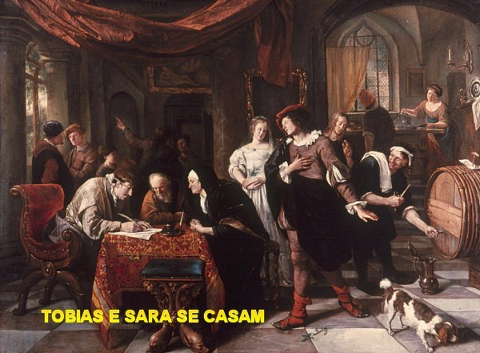
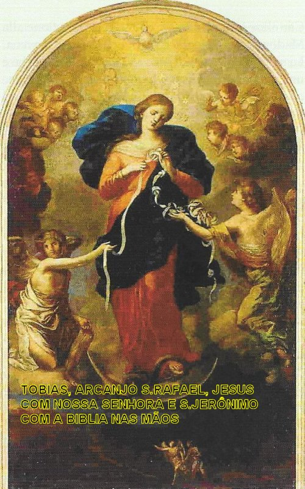
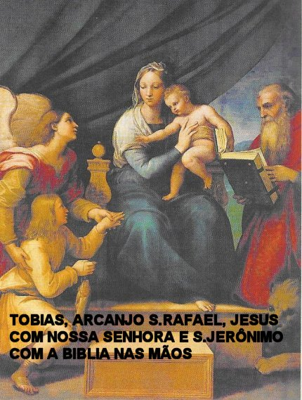

ADMIRÁVEL ARCANJO
SÃO RAFAEL E O CASAMENTO
Na Catequese de uma das quartas-feiras,
o Papa João Paulo II, falou mais uma vez sobre o casamento "o mais antigo sacramento", no sentido de que, mesmo 
O Santo fundador dos Irmãos das Escolas Cristãs escreveu sobre o casamento: "É muito raro que os cristãos recebam a graça do sacramento, porque a maioria se casa somente por razões puramente humanas, ou seja, para estabelecer a sua família, para ter uma boa base econômica, desfrutar em liberdade os prazeres sensuais, etc., ou seja, com intenções contrárias às de JESUS. O Arcanjo Rafael nos ensina no sexto capítulo do livro de Tobit, na Bíblia Sagrada, que o diabo aproveita-se deste comportamento humano e exerce o seu poder sobre essas pessoas. E esta realidade, a experiência vivencial nos mostra as consequências dolorosas de um casamento feito apenas para satisfazer as paixões ou a ganância de um interesse financeiro. Infelizmente só poucas pessoas se casam com boas disposições, com um profundo sentimento amoroso e em estado de graça, e por esse motivo, também são poucos os casais que recebem de DEUS a Graça do Sacramento, a Graça especial própria da Boa União. Se isso acontece, evidentemente a culpa é apenas das pessoas, dos homens e das mulheres, porque não se cuidam e não se preparam, para receber a graça do Sacramento do Matrimônio”.
No final do século XIX, um digno sacerdote francês, um homem puro e honesto, disse: "Apelamos ao Arcanjo Rafael como padroeiro dos casamentos felizes e santo. Ele sempre ajuda a quem suplica a sua intercessão junto a DEUS. Isto porque, a santidade da completa união de um homem com uma mulher no casamento, tem todos os ingredientes de qualidade, da integridade, e da própria ordem do amor. Entretanto, existem muitos casais que gostam de se unirem para desfrutar de forma isolada um do outro, dando-se um ao outro, mutuamente e desinteressadamente. No Casamento os esposos se completam também no prazer físico que dele vier, será como o complemento da festa que acompanha a ternura do amor de ambos. Uma ternura ofertada na delicadeza do coração. Pois foram exatamente assim, os conselhos que o Arcanjo São Rafael deu a Tobias e Sara, os quais decidiram dar prioridade por três dias: a ternura do amor e do prazer.
Atualmente cresceu na Igreja Católica, uma devoção toda especial à VIRGEM MARIA, qual seja “NOSSA SENHORA que desata nós”. A explicação para a grande aceitação deste “novo Nome” dado a MÃE DE DEUS, é porque se trata particularmente de uma oração de súplica a VIRGEM SANTÍSSIMA, para curar as feridas da união conjugal em crise, originada por adultério, pela ameaça de divórcio e da separação matrimonial, que hoje são muito frequentes. E por essa razão, aqui introduzimos a história de como nasceu esta devoção.

O nobre Wolfgang Langenmantel
tinha casado com Sophie Imhoff no ano 1612. Sucessivamente, depois de uma crise
matrimonial, que gerou discussões, entraram em processo de divórcio. Wolfgang
arrependido foi ao Mosteiro de Ingolstadt (cerca de 70 km ao norte de Augsburg)
para obter ajuda. Depois de visitar o Mosteiro em quatro ocasiões diferentes, ao
longo de 28 dias, consultou e recebeu os conselhos do Padre Jesuíta Jakob Rem,
que, graças à sua experiência, entendeu a situação e teve luz para confiar o
caso à VIRGEM MARIA, que na região é invocada com o título de
"Mãe Três Vezes Admirável
de Schoenstatt".
Nos dias seguintes, Wolfgang, graças à oração recitada a VIRGEM MARIA em
companhia dos Jesuítas, obteve uma mudança radical na sua situação familiar.
No último sábado do mês, no dia 28 de setembro de 1615, Padre Jakob Rem rezava diante da imagem da VIRGEM MARIA que se encontrava na Capela do Mosteiro, durante a solene celebração da Santa Missa. Depois da Consagração, levantando a fita matrimonial utilizada no casamento de Wolfang, de maneira admirável e sobrenatural, os nós que haviam na fita foram todos quebrados, mostrando-se a fita completamente lisa e inteira. O casal se encontrava presente a Santa Missa, assim como diversos membros da nobreza alemã, que presenciaram o admirável acontecimento. Depois disso, como por um grande milagre, os desentendimentos terminaram: o casal se uniu para conversar como pessoas sensatas, e todos os obstáculos foram superados, evitando o divórcio e a separação, e o casamento continuou firme e amoroso até o final das suas vidas.
A fita, que é mencionada na história, estava ligada a um ritual que as freiras costumavam fazer durante a celebração de um casamento: entre as mãos juntas dos recém-casados era colocada uma fita branca e faziam uma laçada, como “símbolo de um nó” que iria uni-los a vida inteira.
No início do ano 1700, Hieronymus, filho de Wolfgang e seu sobrinho, decidiram doar em forma de agradecimento, um determinado valor para a construção de um altar dedicado a Nossa Senhora do Bom Conselho, com o objetivo de recordar essa história da família. O pintor contratado retrata a VIRGEM MARIA como "aquela que desata os nós da correia da vida de casado." A imagem é aquela, de uma mulher jovem, bonita, vestida de vermelho com um lenço azul sobre os ombros, movido pelo vento. Claramente visível no topo da imagem está à pomba, símbolo do ESPÍRITO SANTO, Terceira Pessoa da SANTÍSSIMA TRINDADE: MARIA é o templo da SANTÍSSIMA TRINDADE! Na cabeça tem uma coroa de estrelas e a lua debaixo dos seus pés, ao mesmo tempo, esmagando a cabeça da serpente: MARIA é a Imaculada! ELA tem uma atitude serena, mas está concentrada na tarefa que lhe é confiada: de dissolver o emaranhado de nós grandes e pequenos da fita branca. Também na parte inferior da pintura, em tamanho bem reduzido pode-se observar o Arcanjo São Rafael segurando a mão Tobias (uma pequena referência ao nobre Wolfgang que foi ao Mosteiro, acompanhado pelo Arcanjo). O ícone representa o conforto e a confiança que inspira "o conhecimento que existe numa mão capaz de desatar os nós”.


Como Wolfgang e Sophie, Tobias e Sara, também cada pessoa sonha com a proteção Divina, e por isso mesmo, é preciso rezar e suplicar a NOSSA SENHORA, a tão eficaz e poderosa intercessão da MÃE DE DEUS, assim como, pedir também ao SENHOR, que envie o Arcanjo São Rafael para nos proteger do maligno e curar os problemas da saúde, ajudando a família, e concedendo lucidez para um bom entendimento, necessário a harmonia, ao agradável e sadio viver existencial, com as naturais experiências positivas, estimulantes e animadoras, que ocorrem num cotidiano sereno e honesto. E’ nesta perspectiva que cada pessoa normalmente projeta o seu futuro. Entretanto, às vezes acontece o inesperado, dificuldades e fadigas que ocorrem. Outras vezes é uma injustiça, ou circunstâncias da vida susceptíveis de minar o que foi construído com dificuldade, e muitas vezes com a melhor das intenções. Da mesma forma que também podem acontecer traições, calúnias e infidelidades. Às vezes é difícil encontrar uma saída, o coração fica apertado e um sentimento de desânimo invade a alma e o corpo da pessoa. O que fazer?
É necessário ter calma e rezar, antes de qualquer atitude, porque ninguém deve se esquecer que existe um DEUS misericordioso, um PAI maravilhoso e repleto de bondade que socorre todos os seus filhos, estando sempre aberto ao carinho, ao arrependimento e ao perdão. Por isso é necessário, antes de qualquer atitude, recorrer ao SENHOR e suplicar a Luz Divina para iluminar a escuridão dos pensamentos humanos. Ninguém pode esquecer que vivemos, porque este DEUS infinitamente bom inventou a “Alma”, e a envia a cada “Corpo” que nasce aqui na Terra gerado pelos pais da criança. Isto significa dizer, que todas as pessoas tem um “Corpo” e uma “Alma”, ou seja, uma “parte Humana” , que foi gerada pelos pais, e uma “Parte Divina”, que vem de DEUS, e que nos dá a vida com uma missão a cumprir. Então, esta realidade atesta verdadeiramente que todos nós somos filhos de DEUS. E ainda, para ajudar a nossa caminhada existencial, o SENHOR envia a cada pessoa que nasce um Anjo da Guarda, um Anjo Custódio, que acompanha cada criatura em todos os momentos da existência e até depois da morte .
Então, numa primeira consideração, cabe a cada pessoa, procurar estabelecer uma relação de amizade com DEUS, através das orações e das Santas Missas que fervorosamente participar, a fim de se sentir mais a vontade para fazer uma súplica ao SENHOR. Muito embora, antes de formularmos qualquer pedido, DEUS conhece exatamente todas as nossas reais necessidades. ELE apenas deseja que as pessoas sejam verdadeiros filhos, e não somente venham lembrar DELE nos momentos de dificuldades, quando estão com a "corda no pescoço". Esta realidade sinaliza que DEUS embora sendo misericórdia infinita, ELE quer que todos os seus filhos exercitem um coerente e honesto amor para com ELE. Isto porque sendo DEUS o próprio "Amor", ELE jamais negará o auxílio a um dos seus filhos que necessita, mesmo que ele não demonstre no cotidiano o fervor e a grandeza do carinho e da amizade que um filho amoroso deve dedicar ao seu pai.
Como testemunho da grandeza infinita do "Amor" de DEUS por toda humanidade, é suficiente recordar a História da Salvação, quando o PAI ETERNO enviou o seu FILHO JESUS para realizar uma Missão de Amor e "Redimir" as gerações de homens e mulheres de todos os tempos. E JESUS cumpriu a Missão Divina de maneira perfeita e amorosa, criando meios e condições, para a humanidade combater o pecado, ao mesmo tempo em que ELE infundiu um manancial de graças necessárias a nossa salvação eterna. E ainda para nos ajudar na caminhada existencial, nos deixou a sua própria MÃE, a SANTÍSSIMA VIRGEM MARIA, para ser também a Mãe Querida de cada um de nós, protegendo a nossa existência e maternalmente inspirando o coração cristão, a fim de que as pessoas aprendam a amar a DEUS e ao próximo. Por isso também, é necessário rezar para NOSSA SENHORA, lembrar de NOSSA MÃE SANTÍSSIMA e suplicar a sua preciosa e tão eficaz intercessão junto a DEUS. Porque como uma verdadeira Mãe querida, Ela nunca se esquece dos seus filhos, estando sempre presente em nossa vida. Por isso mesmo, aqueles casais que estão em dificuldades, devem olhar para ELA, rezar para a VIRGEM MARIA e lhe pedir com toda a confiança, “que desate os nós da vida do casal” , e em cada caso, restaurar o matrimônio, restabelecer a dignidade do lar, afastando a presença do divórcio que ameaça romper a união legítima querendo consumar a separação eminente. E por fim, confiantes na incomensurável bondade do SENHOR DEUS, também LHE pedir, o auxílio imprescindível do poderoso e admirável Arcanjo São Rafael, para afugentar os demônios e os diabos que infernizam a vida, no sentido de ser alcançada a definitiva tranquilidade espiritual e a necessária paz, objetivando conseguir com santidade, a realização da missão existencial, que o SENHOR DA VIDA, concedeu a cada um de nós.
PROTETOR DO MAR E DAS ARMADILHAS
Os antigos cristãos marinheiros
acreditavam que as tempestades do mar fossem causadas por demônios, e é por isso
que eles se voltavam para o Arcanjo São Rafael 
Na Igreja, a simbologia do mar foi usada para expressar a brevidade da existência humana, comparando, por exemplo, uma gota de água com a vastidão do mar, ou, também, para representar “o homem de pouca fé, em comparação com as ondas do mar, levadas e agitadas pelo vento”. (Tiago 1, 6), e também para explicar a dificuldade em compreender o caminho certo a seguir, dado que no mar não existe pontos de referência, e não há luz-guia (Provérbios 30: 18-19). Os Padres da Igreja usam muitas vezes a viagem marítima como uma metáfora da vida ou da alma, às vezes calmo e sereno, às vezes turbulento e difícil, repleto de inúmeras alegrias e satisfações, bem como os inevitáveis desapontamentos e sofrimentos.
Uma imagem se encontra nas cartas de Santo Ambrosio, onde o grande bispo de Milão escreveu: "Você recebeu o sacerdócio e, de pé na popa da Igreja, você guia o navio sobre as ondas. Continue a equilibrar o leme da fé de modo que as violentas tempestades deste mundo não possam perturbar o seu curso".
Santo Agostinho também se serviu do simbolismo do mar, especialmente em “De beata vita”, onde, para provar que os homens não querem alcançar a felicidade, compara-os com os marinheiros que tentam alcançar o porto, não obstante uma terrível tempestade que impede o término da viagem. O mar pode se tornar rei da ferramenta de justiça divina. Serve para eliminar a humanidade pecadora com um dilúvio (Gn 6,17), ou os opressores do povo de Israel com as águas do Mar Vermelho (Ex 14, 21-30). Mesmo para aqueles que escandalizam as crianças (coração simples), a punição é morrer no mar com uma pedra de moinho pendurada no pescoço (Mc 9, 42). E mais de uma centena de citações poderiam ser colocadas aqui, para mostrar como o simbolismo do mar e do peixe, sempre foi utilizado pela Igreja.
Assim, é fácil constatar que o peixe faz parte da iconografia do Arcanjo São Rafael, que verdadeiramente também protege os marinheiros e pescadores.
Em 1497, Portugal preparou uma esquadra naval, com o objetivo de fazer uma grande pescaria e trazer sementes, especiarias e utilidades, para o Império Português, e o Arcanjo São Rafael foi nomeado o segundo dos quatro navios que iam fazer parte da grande Expedição à Índia, que partiu de Lisboa no dia 8 de Julho. O Rei Emanuel I, o Venturoso, já tinha expedido a ordem, mas o seu primo João II, que morreu em 1495, havia expressado o desejo de que dos quatro navios da expedição, um fosse nomeado de Arcanjo São Rafael e outro navio tivesse o nome de Arcanjo São Gabriel. O Rei para agradá-lo, aceitou.
Com a ajuda dos serviços dos barqueiros florentinos, hábeis na proteção armada da esquadra e na atravessia de longo curso, os quais haviam mudado residência para Lisboa, o navio São Gabriel foi nomeado Barco-chefe da Expedição, que tinha a capacidade de transportar cento e vinte toneladas de carga e foi comandado por Vasco da Gama; no navio São Rafael, o segundo mais poderoso, tinha a capacidade para transportar cargas até cem toneladas e foi comandado por Paulo da Gama, irmão de Vasco; os outros dois navios eram de menor capacidade, com tonelagem reduzida. A Expedição era composta por cento e cinquenta homens e comandada por Vasco da Gama, que seguiu uma rota que denominaram "Rota dos Arcanjos", a qual passava não tão distante das costas do Brasil, que eles ainda não conheciam, naquela época. Contornaram o Cabo da Boa Esperança no dia 22 de novembro sem qualquer dificuldade e aportaram as terras da Índia. Ainda na praia os marinheiros ergueram uma coluna dedicada a São Rafael, seu especial protetor. A Expedição foi coroada de pleno êxito. A pequena estátua de madeira do Arcanjo São Rafael, que estava no navio de mesmo nome, agora é mantida no museu da Marinha Portuguesa, em Lisboa, como lembrança do memorável feito.
=ORAÇÕES=
SÚPLICA CONTRA O MALIGNO
São Rafael Arcanjo, guia-nos nos caminhos da vida: Tu serás o nosso apoio em cada escolha, frustrando os enganos de satanás.
DEUS Todo-Poderoso dá luz e paz a nossa existência, a nossa casa e ao nosso lar, com saúde para o nosso corpo e inspiração a nossa alma.
E Tu, poderoso Arcanjo da Esperança, pela Vontade do SENHOR DEUS, expulsa Satanás e prende num abismo profundo Asmodeu e todos os espíritos malignos, inimigos da nossa salvação temporal e eterna. Amém.
ARCANJO RAFAEL, MEDICINA DE DEUS!
(Cardeal Angelo Comastri, ex-arcebispo de Loreto)
Ó ARCANJO RAFAEL, remédio de DEUS, a Bíblia Ti apresenta como o Anjo que socorre, o Anjo que consola, o Anjo que cura. Venha ao nosso lado no caminho da vida, assim como Tu ficaste perto de Tobias num momento difícil e decisivo da vida dele, e o fez sentir a ternura de DEUS e o poder do Seu Divino Amor; seja para mim um auxílio protetor e um estimulo eficaz, para vencer as tentações de satanás e dos seus asseclas, concedendo paz a minha alma.
Ó ARCANJO RAFAEL, medicina de DEUS, Hoje, as pessoas têm feridas profundas no coração: o orgulho mancha o olhar impedindo as pessoas de se reconhecerem irmãos; o egoísmo agride a família; a impureza tem destruído tanto nos homens como nas mulheres, a alegria do amor verdadeiro, generoso e fiel. Socorre-nos e nos ajude a reconstruir as famílias que são o espelho da família de DEUS!
Ó ARCANJO RAFAEL, remédio de DEUS, muitas pessoas sofrem no corpo e na alma, e são deixadas sozinhas no seu sofrimento. Guia pela estrada do sofrimento humano, todos os que são bons samaritanos! Leve-os pela mão de modo que sejam capazes de enxugar as lágrimas e de confortar os corações infelizes. Rogai por nós, que cremos que JESUS é o verdadeiro, o grande e o seguro remédio de DEUS. Amém!
SÃO RAFAEL ARCANJO
(Olga Bem-vindo)
Ó Arcanjo São Rafael, que curou o bom Tobias, vem, e nos cura, criaturas fracas que sofremos males físicos e espirituais.
SALVE RAINHA...
Tu que é a Medicina de DEUS, atenda com amor e nos ajuda a curar. Nós te louvaremos ardentemente.
PAI NOSSO...
São Rafael Arcanjo, escuta aqueles que Te chama repletos de dor: socorra, apóie, cure, Tu podes... É DEUS que Ti enviou a nós.
AVE MARIA...
Sua ajuda é generosa, Tu elevas as almas. Cura cada ferida, alivia toda a dor, fortalecei e dai vigor aos corações que Ti invocam. São Rafael ajuda-nos, dá-nos a cura ... Com Tua ajuda, vamos encontrar a paz interior.
GLORIA...
SÃO RAFAEL ARCANJO - “Opus Angelorum”
Tu flechas de amor e medicina do amor de DEUS, nós Te rogamos, fira o nosso coração com o ardente Amor do SENHOR e faz com que esta ferida nunca se fecha, de modo que mesmo na vida cotidiana podemos ficar sempre no caminho do amor, e superar tudo com alegria e benevolência!
São Rafael, nos assisti com todos os Anjos, ajuda-nos, e rogai por nós!
Oração ao Príncipe São Rafael Arcanjo
(Irmã Maria dos Anjos Sanchez, filha de Cristo Rei)
O príncipe glorioso São Rafael, generoso protetor daqueles que confiam em Ti. Tu que é o melhor médico da alma e do corpo, deixe-me pedir, humildemente, que cure os males do meu corpo e da minha alma. Tu que curou os olhos de Tobit, me dê saúde física ao meu corpo e, a minha alma dê luz espiritual. Com Tua súplica a celeste Rainha dos Anjos, afaste de mim toda escuridão... Nunca me abandone e sempre me acompanhe, porque quero ser fiel ao meu DEUS até o último suspiro da minha existência.
PAI NOSSO, AVE MARIA, GLORIA
ATO DE CONSAGRAÇÃO
O SÃO RAFAEL, grande príncipe da corte celestial, um dos sete espíritos que contemplam DEUS incessantemente diante do Trono DIVINO, eu [...........................], na presença da SANTÍSSIMA TRINDADE, de NOSSA SENHORA MARIA IMACULADA, NOSSA RAINHA e RAINHA também dos Nove Coros de Anjos, eu me consagro a TI como um dos seus funcionários, todos os dias da minha vida. Não passará um único dia, sem a TI Venerar, e a TI oferecer as minhas mais humildes reverências. Quanto a mim, vou contribuir para outras pessoas poderem TI honrar para também provarem o efeito da TUA proteção.
Ó SANTO ARCANJO, aceite a minha oferta e me receba entre os seus filhos protegidos que sabem por experiência própria o valor do TEU auxílio.
Guia das viagens: dirigi-me durante a peregrinação desta vida.
Protetor dos que estão em perigo: livra-me de todos os males que podem ameaçar o meu corpo e a minha alma.
Refúgio dos infelizes: ajuda-me na minha pobreza espiritual e física.
Consolador dos aflitos: dissipa as dores que mantém o meu coração e o meu espírito oprimidos pela angústia.
Médico Admirável: cura as enfermidades da minha alma e conserva-me a santidade, de modo que no trabalho eu possa servir NOSSO SENHOR com muito mais fervor.
Protetor das famílias, lance bondade no meu olhar; faça que a minha família e os meus bens experimentem o efeito da TUA proteção.
Protetor das almas, me livre de todas as sugestões do infernal inimigo e não permita que eu venha a cair mais na terrível rede.
Benfeitor das almas caridosas, para desfrutar da TUA proteção benevolente, deixo na TUA presença a minha decisão de nunca negar a ajuda aos outros irmãos, na medida do possível dos meus recursos humanos.
Aceite a minha humilde oferta, ó SANTO ARCANJO, e conceda-me a graça de desfrutar durante toda a minha vida e no momento da minha morte, dos efeitos da TUA proteção e da TUA assistência. Amém.
PROTETOR DO VIAJANTE
Glorioso Arcanjo São Rafael, príncipe ilustre da corte celestial pelos dons da sabedoria e da graça Divina, TU que és o guia daqueles que viajam por terra, pelo ar e pelo mar, e também, alívio dos pobres, refúgio dos pecadores, peço-TE, ajuda-me nas minhas necessidades e em todas as dificuldades da vida, como fostes para o jovem peregrino Tobias. Pois TU és a Medicina de DEUS, humildemente TE rogo curar as doenças e os males que afligem o meu corpo. Especialmente TE peço uma pureza angelical para merecer de fato ser o meu corpo um templo do ESPÍRITO SANTO. Amém.
“Itinerarium”
(Oração para quem vai por uma estrada e pelas ruas)
SENHOR TODO-PODEROSO e cheio de misericórdia, nos dirigi no caminho da paz e da prosperidade, e que o VOSSO Arcanjo São Rafael nos acompanhe na rua, para voltarmos as nossas casas em paz, com saúde e com alegria. Amém.